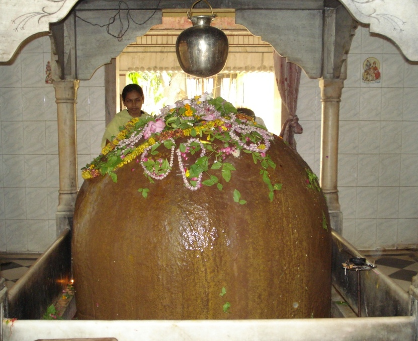

<?xml version="1.0" encoding="UTF-8"?><rss version="2.0"
	xmlns:content="http://purl.org/rss/1.0/modules/content/"
	xmlns:wfw="http://wellformedweb.org/CommentAPI/"
	xmlns:dc="http://purl.org/dc/elements/1.1/"
	xmlns:atom="http://www.w3.org/2005/Atom"
	xmlns:sy="http://purl.org/rss/1.0/modules/syndication/"
	xmlns:slash="http://purl.org/rss/1.0/modules/slash/"
	>

<channel>
	<title>Agni Dhruveshwar &#8211; Varanasi Temples</title>
	<atom:link href="index.html" rel="self" type="application/rss+xml" />
	<link>../../../../../index.html</link>
	<description>Temples of Varanasi as referred to in Kashi Khand</description>
	<lastBuildDate>Thu, 19 Jun 2025 05:16:46 +0000</lastBuildDate>
	<language>en-US</language>
	<sy:updatePeriod>hourly</sy:updatePeriod>
	<sy:updateFrequency>1</sy:updateFrequency>
	<generator>https://wordpress.org/?v=4.6.29</generator>
	<item>
		<title>AGNI DHRUVESHWAR</title>
		<link>../../../../../shiva-temples/agni-dhruveshwar/index.html</link>
		<pubDate>Sun, 09 May 2010 08:42:13 +0000</pubDate>
		<dc:creator><![CDATA[admin]]></dc:creator>
				<category><![CDATA[Agni Dhruveshwar]]></category>
		<category><![CDATA[Other Shiva Temples (A-D)]]></category>
		<category><![CDATA[Shiva Temples]]></category>
		<category><![CDATA[ekadasha ling yatra]]></category>
		<category><![CDATA[kedar]]></category>

		<guid isPermaLink="false">../../../../../p=282.html</guid>
		<description><![CDATA[Kashi Khand, Chapter 100 states that devotees should undertake religious tour (Yatra) of eleven Shiv Lings. This Yatra is known as Ekadasha Maha Rudra Yatra. (Ekadasha means eleven). Agni Dhruveshwar Ling is the first Ling in the above Yatra.  This Yatra should be undertaken as often as possible. Devotees who worship Agni Dhruveshwar will attain [&#8230;]]]></description>
				<content:encoded><![CDATA[<p>Kashi Khand, Chapter 100 states that devotees should undertake religious tour (Yatra) of eleven Shiv Lings. This Yatra is known as Ekadasha Maha Rudra Yatra. (Ekadasha means eleven).</p>
<p>Agni Dhruveshwar Ling is the first Ling in the above Yatra.  This Yatra should be undertaken as often as possible.</p>
<p>Devotees who worship Agni Dhruveshwar will attain Rudra Padavi (equivalent to Lord Rudra – Lord Shiva).</p>
<p></p>
<p style="text-align: center;"><strong><span style="text-decoration: underline;">(AGNI DHRUVESHWAR)</span></strong></p>
<p><strong><span style="text-decoration: underline;">LOCATION OF AGNI DHRUVESHWAR</span></strong></p>
<p>Agni Dhruveshwar is also known as Jageshwar Mahadev and is located at J.66/4, Ishwar Gangi. (Reference:  Book by Pt. Kedarnath Vyas). People can reach this place by rickshaw or auto as Ishwar Gangi/Jageshwar temple is quite famous. Another landmark is Adarsh School.  Agni Dhruveshwar (Jageshwar) Ling is a very huge Ling and probably the biggest Ling ever seen. This can be judged by the height of the man standing near the Ling.</p>
<p>&nbsp;</p>
<p><strong>Please watch our YouTube Video about Agni Dhruveshwar at following Link</strong></p>
<p>&nbsp;</p>
<p><a href="https://www.youtube.com/watch?v=PliY4V9fy8o&amp;t=6s">https://www.youtube.com/watch?v=PliY4V9fy8o&amp;t=6s</a></p>
<p>&nbsp;</p>
<p>&nbsp;</p>
<p><strong><span style="text-decoration: underline;">TYPES OF POOJA</span></strong></p>
<p>The place of worship is open from 04.00 a.m. to 12.00 Noon and from 04.00 p.m. to 10.00 p.m. Mangala Aarti is held at 05.00 a.m., Bhog Aarti at 12.00 p.m. and evening aarti at 07.00 p.m.</p>
<p>&nbsp;</p>
]]></content:encoded>
			</item>
	</channel>
</rss>
